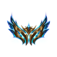
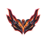
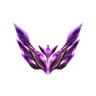

Hesaplarınıza Hükmedin, Sisteminizi Optimize Edin.
Riot Games ve League of Legends hesaplarınız arasında saliseler içinde geçiş yapın. 144Hz+ ekran tazeleme ve Windows Nihai Performans güç planını harici araç gerekmeksizin otomatik devreye alın.
 785
785

Challenger • 1.240 LP 412
412

Grandmaster • 680 LP 256
256

Master • 215 LPRekabetçi Oyuncular İçin Tasarlandı
Proje Standartları ile garanti altına alınmış performans, hız ve güvenlik ilkeleri.
Saliseler İçinde Profil Değişimi
Doğrudan oturum ve token geri yükleme protokolü sayesinde iki faktörlü doğrulama veya şifre yazma zahmeti olmadan anında hesap değiştirin.
Çekirdek Win32 Hz & Güç Motoru
Windows ChangeDisplaySettingsEx ve PowerSetActiveScheme API'leri ile harici konsol komutları olmadan anında 144Hz ve Nihai Güç moduna geçer.
Riot API Anahtarsız Veri
Herhangi bir başvuru, kota veya API anahtarına ihtiyaç duymadan doğrudan Riot ID ile güncel profil ikonu, seviye ve lig madalyalarını çeker.
7-Zip Ultra Yedekleme & Ayar Kilidi
Otomatik dosya koruma kilitleri ile oyun güncellendiğinde veya istemci çöktüğünde oyun içi tuş atamalarınız ve ayarlarınız asla sıfırlanmaz.
Koyu Hextech & Açık Piltover Temaları
Windows sistem temanızı otomatik algılar; yüksek kontrastlı Koyu Hextech ve rafine Açık Piltover renk paletleri ile gözü yormaz.
Sessiz Sistem Tepsisi & IPC Uyandırma
Görev çubuğunda yer kaplamadan saat yanında sessizce çalışır; kısayoluna veya başlatıcıya tekrar tıklandığında anında öne gelir.
Yerleşik Butonları ve Yetenekleri Keşfedin
Uygulamadaki her buton ve ayar seçeneği oyuncu konforunu ve sistem hızını maksimize etmek için özel olarak kodlandı.
Ana Ekran Araç Çubuğu ve Kart Kontrolleri
Riot Client açıkken artı butonuna bastığınızda hesabın adını, seviyesini, sunucusunu ve güncel derecesini hiçbir şey yazmanıza gerek kalmadan otomatik algılayıp kaydeder.
Monitörünüzün anlık yenileme hızını gösterir ve tek tıkla oyun hızı (örn. 144Hz/240Hz) ile masaüstü hızı (60Hz) ve Windows Güç Planı arasında doğrudan Win32 API ile geçiş yapar.
game.cfg ve PersistedSettings.json dosyalarını kilitler. İstemci güncellemelerinin tuş atamalarınızı sıfırlamasını engeller.
League of Legends, Riot Client, Vanguard tepsi hizmetleri ve tüm eşlikçi uygulamaları tek tıkla sistemden tamamen ve temizce temizler.
Yavaş açılan masaüstü kısayollarını atlayarak doğrudan Riot Client Servislerini LoL parametreleriyle en hızlı şekilde ateşler.
Hesap kartlarını ok butonlarıyla yukarı veya aşağı kaydırarak en çok oynadığınız profilleri en üste dilediğiniz gibi yerleştirin.
Kart üzerindeki sihirdar adı veya etiketine tıkladığınızda anında Windows panosuna kopyalar ve ekranda şık bir onay bildirimi gösterir.
Hesabın avatarına veya lig madalyasına tıkladığınızda o hesabın Porofessor & League of Graphs detaylı istatistiklerini tarayıcınızda açar.
Ayarlar ve Tercihler Kontrol Merkezi
Hesap geçişi yapıldığında eski istemciyi kapatma, oyunu otomatik başlatma veya Blitz/Porofessor eşlikçi uygulamalarını otomatik yeniden başlatma seçenekleri.
Hesap geçişinde uygulanacak oyun Hz değeri (60, 144, 240, 360 Hz) ve LoL kapatıldığında geri dönülecek masaüstü Hz değerini bağımsız yapılandırın.
Oyuna girerken "Nihai Performans" veya "Yüksek Performans", oyundan çıkınca "Dengeli" moda otomatik geçiş için sistem güç planlarını belirleyin.
Hesap geçişi öncesinde, sonrasında veya LoL kapatılırken çalıştırılacak özel PowerShell, CLI veya `.bat` komutları tanımlayın.
Kayıtlı e-postaları asteriks ile maskeleyerek (k****@domain.com) canlı yayınlarda ve ekran paylaşımlarında güvenliğinizi koruyun.
Üst başlık çubuğunda yer alan butonları (Wiki, Yama Notları, CfgLock, LoL Kapat) dilediğiniz gibi açıp kapatarak arayüzü sadeleştirin.
Sıfır Yük: Safkan C# .NET 10
Yerel Windows Mimarisi
Electron veya Chromium ağırlığı yoktur; doğrudan safkan .NET 10 WPF ve Win32 API'leri ile çalışır.
Yerel Medya & Çevrimdışı Kullanım
Tüm 11 lig madalyası ve ses efektleri yerel medya klasöründe saklanır; internet olmasa dahi anında yüklenir.
AES-256 & DPAPI Kriptografi
Hesap verileriniz Windows Veri Koruma API'si (DPAPI) ve AES-256 ile yerel olarak şifrelenir, dışarıya sızdırılamaz.
var display = new DisplayManager();
display.SetRefreshRate(144); // Direct Win32 API
var power = new PowerManager();
power.ApplyScheme("NihaiPerformans");
var session = await RiotSession.RestoreAsync(targetProfile);
// Geçen Süre: 42ms • Sıfır Gecikme
Lol Account Switcher'ı Birlikte Geliştirelim
Bir hata mı fark ettiniz, yeni bir özellik mi öneriyorsunuz veya geri bildiriminiz mi var? Deneyimi mükemmelleştirmek için her önerinizi dinliyoruz.
Hata Bildirimi & Özellik Talebi
GitHub üzerinde bir issue (talep) açarak karşılaştığınız sorunları bildirebilir veya yeni sürüm önerilerinizi iletebilirsiniz.
Doğrudan İletişim & Öneriler
Bireysel sorularınız, iş birliği veya doğrudan geliştiriciye iletmek istediğiniz düşünceleriniz için e-posta gönderebilirsiniz.